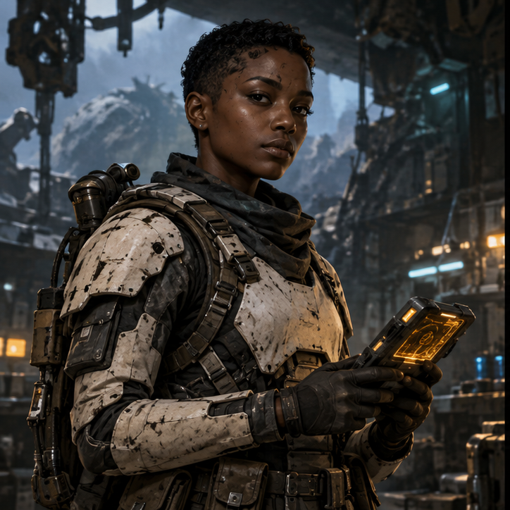

Horror / The Ossuary Belt
Runner story brief
Jane · Field medic
Broken Reach — medicine and seed courier
Learner-authored record · 9/9/2026- Character
- Jane
- Crew role
- Field medic
- Origin
- Broken Reach — medicine and seed courier
- Runner type
- Human runner
- Assigned mission
- The Ossuary Belt
- Genre
- Horror
- Defining feature
- Calm, Fast-Paced, and Organized
- Strength
- Repairs damaged equipment
- Limitation
- Replacement parts and power are scarce
- World fit
- Checked by learner
- Portrait
- Course reference concept; create your own final illustration.
- Who needs this console?
- The Dark Veil crew is trapped in planet mars and are injured badly. They need aid and medical assistance to survive.
- What must it help them do?
- The application must help the Dark Veil crew survive on Mars after their base is attacked by creatures. The crew needs medical aid and protection. The application will help locate injured crew members, provide aid and help with defense.
- Why does the outcome matter?
- The outcome matters because the Dark Veil crew is depending on the medical aid.
- What does your runner discover?
- The runner discovers the weather being extremely hot, and the area being filled with only dirt and rocks.
- What makes the evidence difficult?
- Mars makes the evidence difficult to rely on because mars is dangerous and isolated.
- How does the runner respond?
- The runner has to take drastic measures to determine whether to trust the source of evidence or not.
- What happens next?
- Once the runner decides to trust the evidence, their battlefield was raided and the creatures destroyed their base.